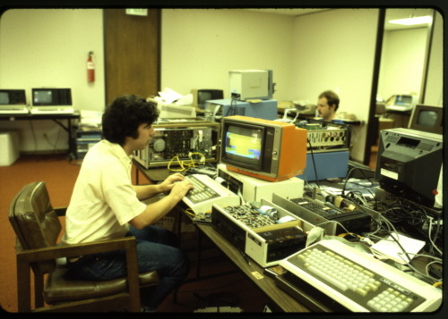
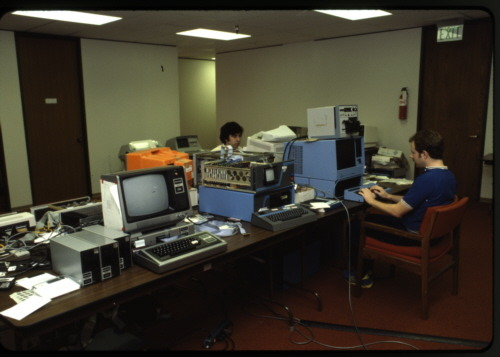
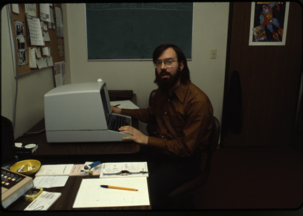
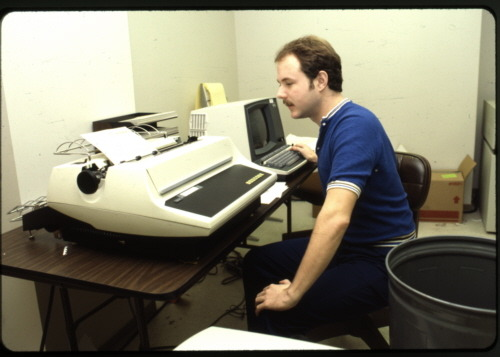
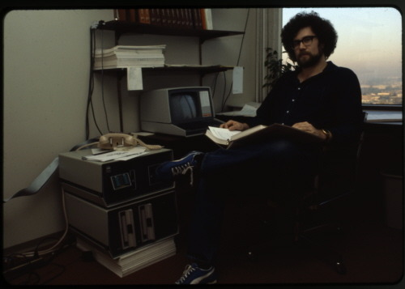

Microsoft November 1979 photos by John L Marshall
These photographs were taken at Microsoft shortly after they moved from Albuquerque, New Mexico to the 8th floor of the Old National Bank building on Northeast 8th Street in Bellevue, Washington. Bob Wallace invited me to take photographs with the agreement of Bill Gates. I was allowed free access to the entire facility. These photographs were taken in November 1979.
Microsoft did software development on a DECsystem 2020 (Digital Equipment Corporation) a 36 bit minicomputer. The hardware lab included many brands of computers where Microsoft Basic, Fortran or Cobol were ported and tested.